Getting Started
Overview
This section will go through how to set up mGBA, an emulator for the Game Boy Advance (GBA) console. It is free, open-source, and easy to install, making it a popular choice for many desktop gamers.
Installing mGBA
The first step is to install the emulator.
If you already have it, skip to Using ROMs.
- Visit the official downloads page at mgba.io.
-
Download a version suitable for your operating system. For Windows users, you will see the following options:
- Windows (portable .7z archive)
- Windows (installer .exe)
- Windows (64-bit, portable .7z archive) < Recommended
- Windows (64-bit, installer .exe)
32-bit vs 64-bit Windows?
The number of bits refer to the sizing of how data is stored on your system.
Most modern computers are 64-bit, so you will probably need one of the latter two options.
If you have a 32-bit system, choose between the first two.If you are unsure, you can usually find this information in your system settings.
The ".7z archives" are the portable versions. These hold everything compressed as a 7-Zip (similar to a .zip file). This is the recommended way to install mGBA, as you only need to extract the files to get started. This allows you to choose where to store it on your computer, and also lets you keep your game files with mGBA.
Many newer versions of Windows can extract 7-zip without additional setup, but some systems may need a separate extractor from the 7-zip site.
Warning
It is important to store mGBA in a "common folder" (does not require administrator privileges to access).
We recommend storing it in a new folder in Documents or on your Desktop
- Click on the
Windows (64-bit, portable .7z archive)option to download the files. -
Extract the files.
- Right-click on the archive (
mGBA-xx.xx.xx-winxx.7z). -
Click either:
Extract all
or
Extract with 7-zip
-
Choose a valid location to put the files.
- Click "Extract".
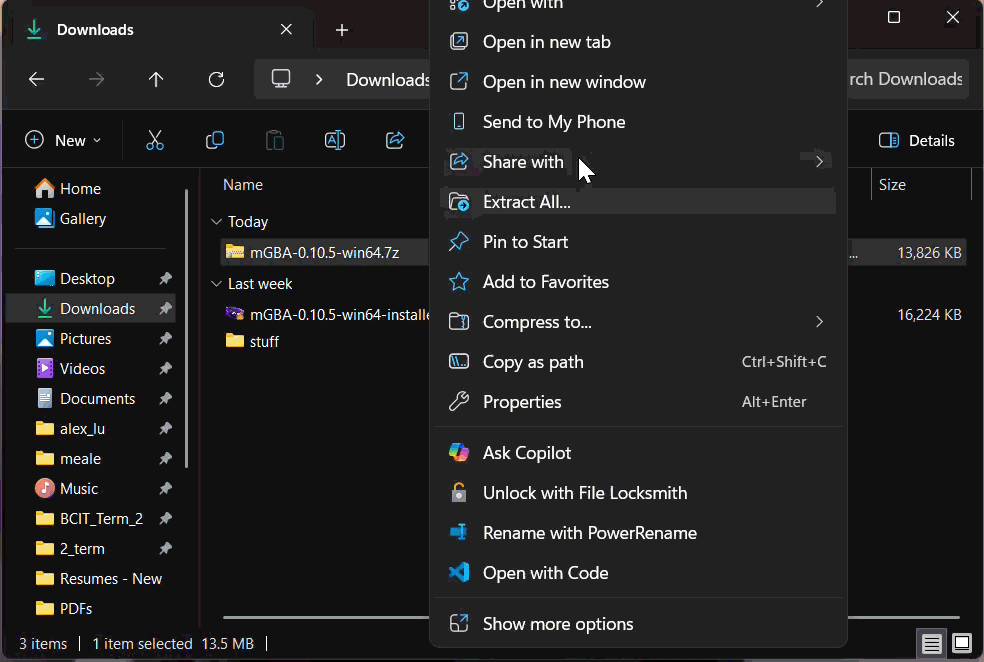
- Right-click on the archive (
Success
The contents of the extracted folder should look like this.
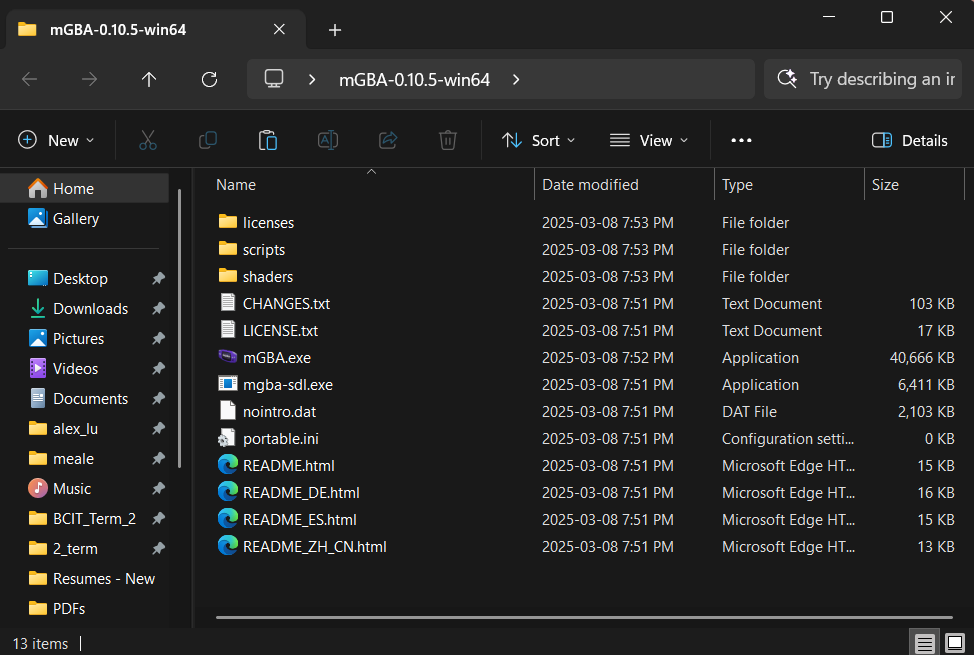
The "installer .exe" may be useful for people less comfortable using their file systems.
This is an application known as an "install wizard", that will help you install mGBA step-by-step.- Click on the
Windows (64-bit, installer .exe)option to download the installer. - Run the install wizard (
mGBA-0.10.5-win64-installer.exe). - Follow the prompts on screen.
Success
Once installed, the application should exist at the chosen install location.
A Desktop or Start Menu shortcut may also created if this was chosen during the install process. -
Run mGBA.exe. If the portable version was used, this will be in the extracted folder.
If the installer was used, this can usually be accessed from one of the following:
- A "Desktop" shortcut.
-
the Windows "Start Menu".
Windows-Key > Search "mGBA"
-
The install location, the default being:
C:\Program Files\mGBA
Success
The app should look something like this once opened.
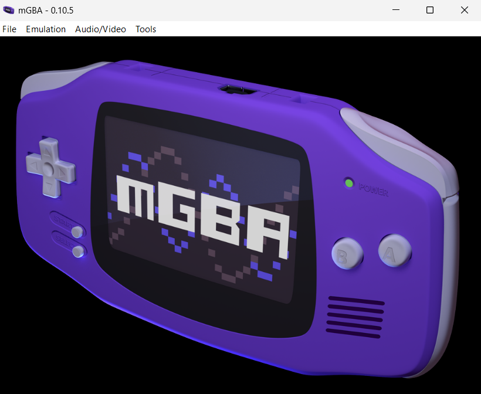
Using ROMs
ROM stands for Read-Only Memory, which refers to data that cannot be modified - often stored in cartridge or disc form. In the context of games and emulation, it also refers to copies or "dumps" of the game from physical to digital form.
mGBA is compatible with the following types of games:
- Game Boy (.gb files).
- Game Boy Color (.gbc files).
- Game Boy Advance (.gba files).
- Super Game Boy (.sgb files).
The next step is to find a ROM(s) and load it with mGBA.
-
Download a ROM.
Getting ROMs can be done in a couple ways:
- Acquire them online.
- Upload them from a physical copy of the game (also known as ripping ROMs).
Be careful when downloading ROMs online
Downloading ROMs online can be risky and can be illegal depending on where you live!
Here is a list of things to check if you decide to acquire them this way:
- Avoid any ROMs that come as .exe files, these are likely malicious programs.
- Cross-check ROM sites with communities such as r/Roms on Reddit.
- Stay away from any buttons or links that do not match the look of the rest of the site.
-
Move the ROM files to a folder of your choosing.
In your file explorer, drag the .gb, .gba, or .gbc file to a "common folder" (does not require administrator privileges to access). If the ROM is in a .zip folder, there is no need to extract it.
If using the portable version, we recommend creating a "Games" folder in the same location as "mGBA.exe".
Save files are stored in the same folder as the ROM
By default, mGBA will also store your game save progress as ".sav" files in the same folder as the ROM.
To change this behaviour, edit the "Path Settings" in mGBA:
Tools > Settings > Interface > Path
-
Run mGBA.exe.
-
Load the ROM.
Using the ROM files, there are a couple options for loading these into mGBA.
Quick start for previously loaded games
Once a game has been opened, you can restart it without directly loading the file again.
File > Recent > Name of your ROM
One option is to directly start a single game.
-
Navigate to the "Load ROM..." option.
File > Load ROM...
This should open the File Explorer.
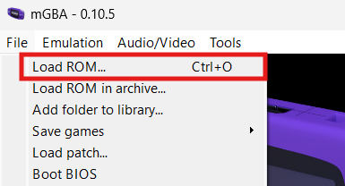
You can also use a shortcut for this.
Enter Ctrl + O on your keyboard to quickly load a ROM.
-
Choose a ROM.
In the file explorer, navigate to the folder from step 2 and click on the ROM to select it.
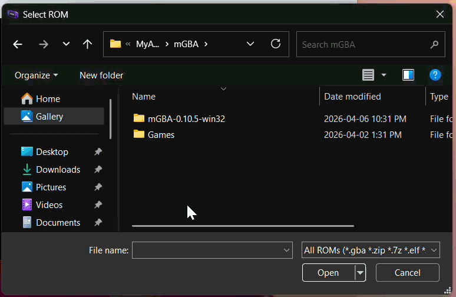
You can also pre-load multiple games so you can start them from mGBA's home screen.
-
Navigate to the Interface tab in mGBA's settings.
Tools > Settings > Interface
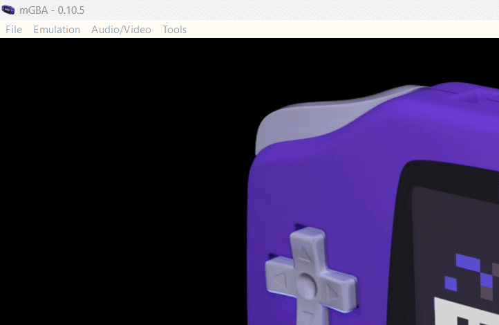
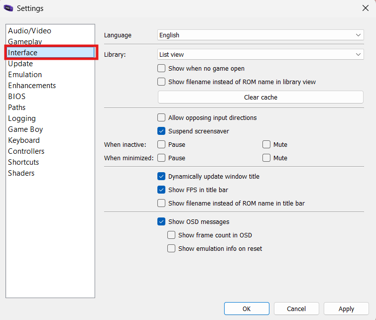
-
Activate the game library.
Under the Library section, select "Show when no game open" to change the home screen into a game library.
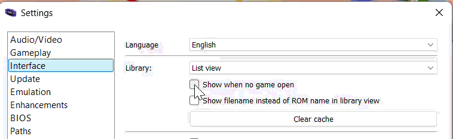
-
Click "Apply".
This will save the setting and return you to the home screen.
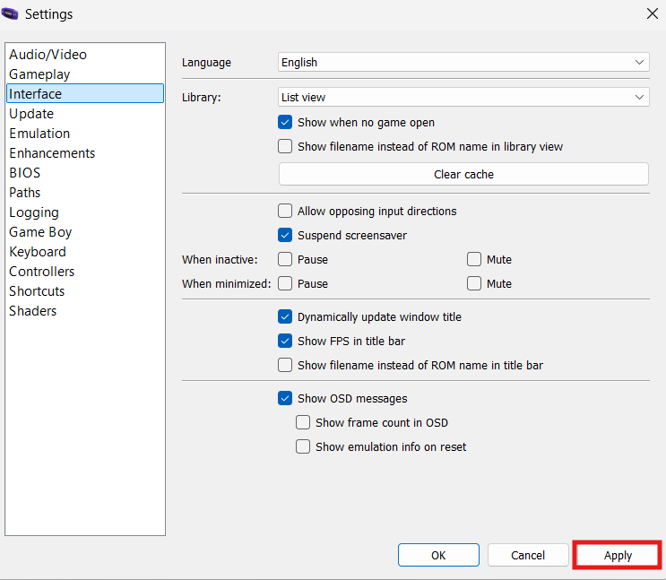
Check if the setting worked!
Your home screen should now look like this.
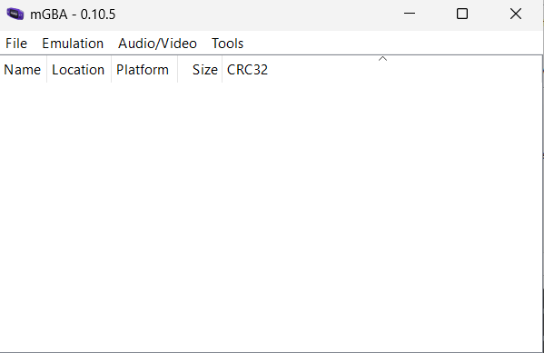
-
Navigate to the "Add folder to library..." option.
File > Add folder to library...
This should open the File Explorer.
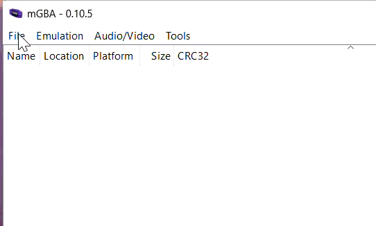
You can also use a shortcut for this.
Enter Ctrl + O on your keyboard to quickly load a ROM.
-
Choose a folder with ROMs.
In the file explorer, navigate to the folder from step 2 and click "Open".
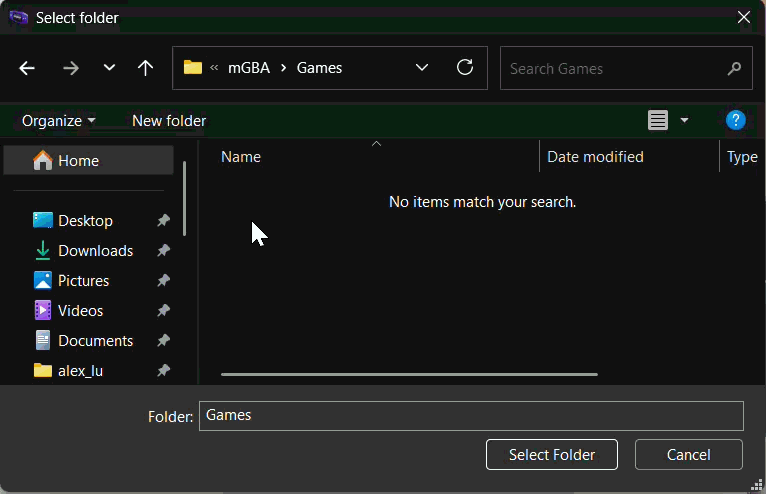
-
Choose a ROM from the mGBA home screen.
Start a game by clicking on a ROM name in the home screen.
-
Success
Your game should now be running.
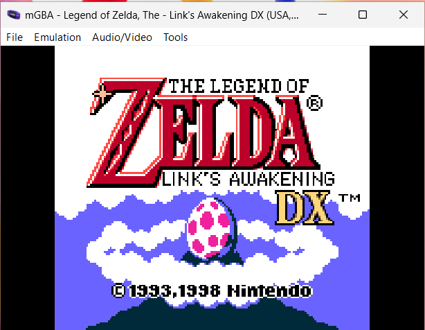
Exiting a game
To turn off the game, you can either:
- close mGBA, or
- shutdown only the game.
This section highlights the second option.
Remember to save your progress before exiting.
- Navigate to the Emulation tab.
-
Click Shutdown.
Emulation > Shutdown
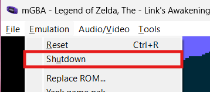
Success
This should bring you back to mGBA's home screen, where you can load another game.
Conclusion
By finishing this section, you should know how to do the following:
- Install mGBA.
- Load individual/multiple ROMs.
- Start a game.
- Shutdown a game.
Congratulations  , you now know how to set up and play games with mGBA!
, you now know how to set up and play games with mGBA!
Go to the next section to learn about configuring keyboard and controller controls.